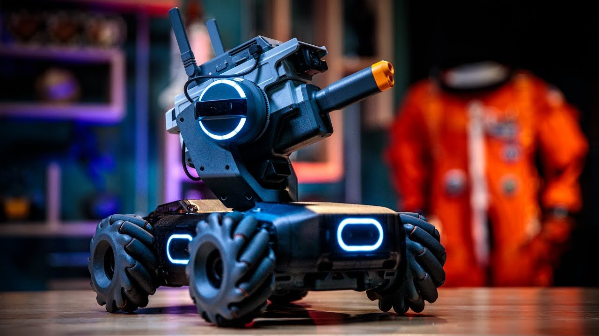
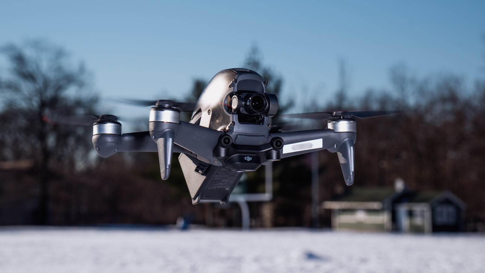

DJI
DJI RoboMaster S1
USD $549 / INR 50000
Buy NowThe RoboMaster S1 is a game-changing educational robot built to unlock the potential in every learner. Inspired by DJI's annual RoboMaster robotics competition, the S1 provides users with an in-depth understanding of science, math, physics, programming, and more through captivating gameplay modes and intelligent features. The S1 supports the Scratch and Python programming languages. This allows you to take your abilities to the next level, whether you are new to coding or are already on your way to becoming an expert.
Endless Possibilities
Up to 46 customizable components[3] give you unlimited space for innovation, enabling you to grow and learn in an exciting way that expands the capabilities of your S1, and yourself. Six PWM ports[4] and one SBus port support customized accessories, granting further options. Operate your S1 with a remote controller that supports SBUS protocol, or program complex codes with an external development board to explore the unlimited possibilities of the S1 and the magic of the robotic world.
Free-For-All
There can only be one winner in this competition of wits and speed. Use custom skills to get an edge and defeat opponents in this thrilling melee that utilizes the S1's unique referee system and intelligent sensing armor.
Conquest
Build your own competition arena and divide players into two teams. Set up your team strongholds, and the first team to occupy all of their opponent strongholds wins.
Develop Custom Skills
In any competition, wisdom is equally as important as power. The S1 enables users to apply their classroom knowledge to compile custom coding, unlocking unique functions that will surprise onlookers and defeat competitors. With its new education concept, the S1 helps users embrace the joy of learning in new and exciting ways.
Intercom
The new Intercom feature lets you enjoy voice interactions with friends nearby. You can also pre-record audio files in the RoboMaster app on your mobile device and play them on the S1, unlocking an array of exciting new possibilities.

Review by: Tech Burner
DJI FPV 2

USD $1229
Buy Now
The safest insanely fast FPV racer on the planet
Weight: 795g | Dimensions : 178 x 232 x 127mm (without props) | Sensor: 1/2.3in CMOS | Camera resolution: 12MP | EFL: 14.6mm | Field of View: 150˚ | Shutter: Electronic, 1/50-1/8000 sec | Video Resolution: 4K@60fps | Color: 8-bit | Gimbal: 1-axis | Battery life:: 20 minutes | Max Range: 10km / 6mi | Max flight: 20 mins | Storage: MicroSD | Collision sensors: Forward / Downward | Max Speed: 140kph / 87mph
Fun beyond any rational measure
Exceptional collision prevention for FPV
Not targeted on photographers
This is the kind of tech so gorgeous and exciting a Luddite would rethink their life goals on first sight. Apparently eschewing their usual creative goals, DJI have put everything into making this a speedy stunt-capable drone which can more than hold its own in the world of FPV racing; it has a top speed of 140kph and the first 100 of that can be reached in a blinding 2 seconds.
Not forgetting their photography customers (and perhaps understanding that an ordinary racer costs somewhat less), this drone has also been equipped with a much more capable camera system than usually seen on similar drones. The standard practice is to strap a GoPro to the top and recover the footage later, but here a single axis gimbal (still one more than most FPV racers) has been paired with software to achieve a system capable of capturing excellent 4K video at 60fps, meaning this drone might be for more than just racers.
Review by: The Verge
DJI MAVIC 2 PRO

USD $1559
Buy NowThe ultimate travelling photographer’s drone Weight: 907g | Dimensions (folded): 214 x 91mm x 84mm | Dimensions (unfolded): 322 x 242 x 84 | Sensor: 1” CMOS | Camera resolution: 20MP | EFL: 28mm | Field of View: 77˚ | Shutter: Electronic, 8-1/8000 sec | Video Resolution: 4K@30fps | Color: 10-bit | Gimbal: 3-axis | Battery life: 31 minutes (3850mAh) | Collision sensors: Omnidirectional | Max Range: 8km / 5mi | Max Speed: 72kph / 44.7mph 1-inch sensor for low-noise images 10-bit video for post-processing No mechanical shutter The Mavic 2 Pro takes advantage of DJI’s acquisition of iconic camera manufacturer Hasselblad back in 2017 – incorporating Hasselblad's processing algorithms into the best camera found on any compact drone. Cinematographers will appreciate the support for 10-bit Dlog-M and HDR video (allowing post-processing), while photographers will be equally excited by the high ISO shooting and rich quality provided by the large image sensor. While many pros might not mind carrying bigger equipment, the ability to be able to sneak this into a spare lens bay in a camera bag provides multi-tasking pro photographers with a whole new dimension. DJI’s Occusync technology means the Mavic 2s can be paired with the company’s stunning FPV goggles, making this truly one of the best DJI drones around.
Review by: The Verge
DJI MINI 2

USD $449
Buy Now
All the drone you can possibly get under the registration weight
Weight: 242g | Dimensions (folded): 138mm x 81mm x 58mm | Dimensions (unfolded): 159 x 203 x 56mm | Sensor: 1/2.3in CMOS | Camera resolution: 12MP | Maximum aperture: ƒ/2.8 | EFL: 24mm | Field of View: 83˚ | Shutter: Electronic, 4-1/8000 sec | Video Resolution: 4K@30fps | Color: 8-bit | Gimbal: 3-axis | Max Range: 10km / 6.2mi | Max flight: 30 mins | Storage: MicroSD | Collision sensors: Downward | Max Speed: 57kph / 35.7mph
A lot of drone for the money
4K video and Raw mode camera
No forward collision sensors
The Mini 2 is a reimaging of the Mavic Mini (see below); it takes a well-engineered ultra-light airframe (the weight is non-negotiable) and addresses the areas which drone geeks complained about. Well, the ones who usually flew much more expensive drones mentioned, anyway. Principally these were: the radio range, the response to cross wind, and an assortment of camera features.
Now the Mini 2 has essentially the same fantastic new OcuSync 2.0 controller from the Mavic Air II, with automatic frequency hopping. Together with more powerful motors and improved software this drone can handle Force 5 (not too bad for such a light craft). Photographers have been rewarded with Raw, Exposure Bracketing (though only 3 stops), and DJI’s spectacular automated panorama features, while video enthusiasts finally have 4K under 250g (and a shiny logo near the lens to prove it), topped off with digital zoom (useful to have, not essential to use).
The new drone also sports some improvements to file transferring making it easier to go from drone to phone, and an extra hue-changing light for, er… well, it’s fun to change the color using the remote. Perhaps the next update will bring a better reason